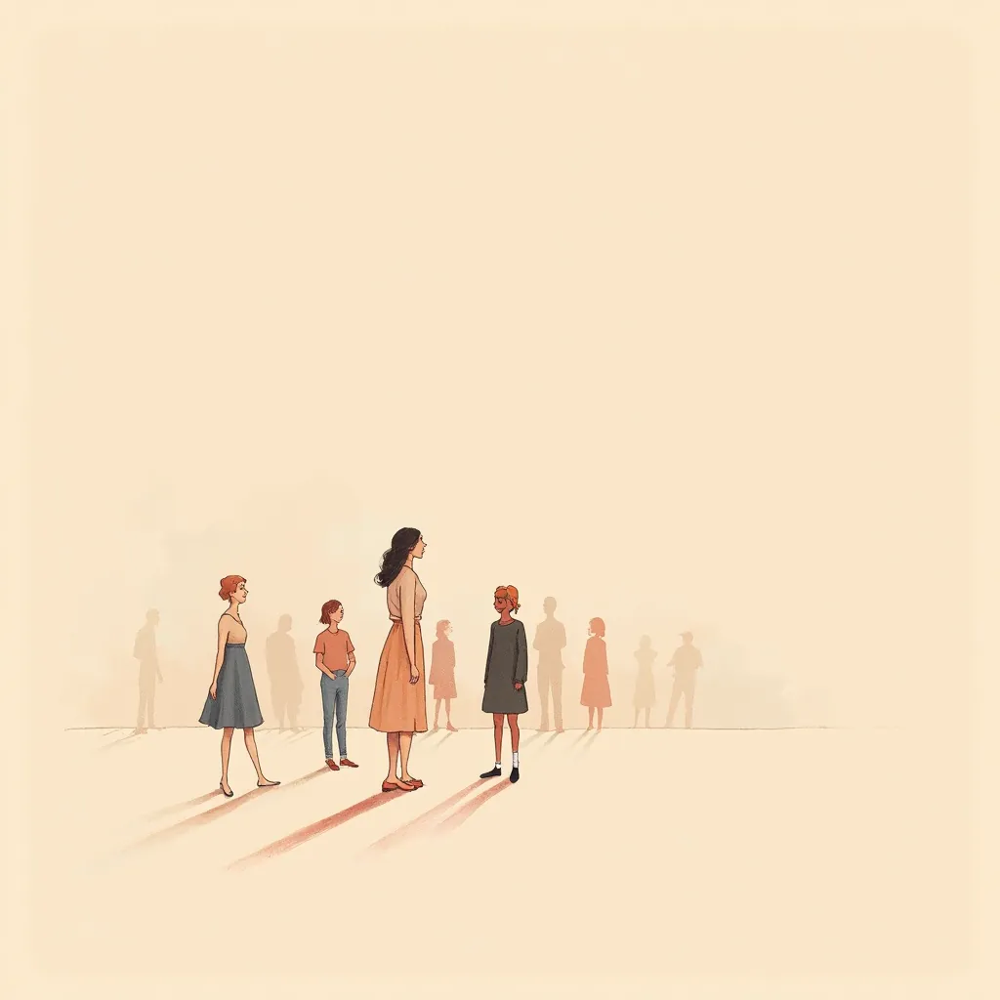

The Man Who Went Quiet
“You stopped speaking up because it was easier. Now you wonder if anyone would notice you gone.”
You're at the dinner. Somebody else's house, your people, the table loud. You said one thing earlier and it landed in the middle of the room and nobody picked it up. So now you just pass the rolls. You laugh when they laugh. And you have this quiet thought: if I got up and walked out right now, how long before anyone looked at my chair.
This one's mine.
Not the same shape as yours. But the same feeling. I know what it is to be in a room full of people and feel like a coat hanging on the back of the door.
When my marriage ended, I didn't fall apart in front of anyone. I wish I could tell you I did. I just got smaller. I stopped saying what I thought. I stopped picking up the phone. People would ask how I was and I'd say good, good, and change the subject, because my pain felt like too much to put on a table. So I carried it alone. And carrying it alone for two, three years, I went so quiet I started to disappear. I'd sit at my own family's table and feel like a guest. I told myself that was strength. Keeping it in. Not being a burden. It wasn't strength. It was a man slowly vanishing and calling it manners.
The day it cracked wasn't loud. I was at a cookout, my brother's place, and a kid — maybe four — climbed up in the empty chair next to me and just started talking to me about his dinosaur. Full sentences. Big eyes. He saw me. Nobody at that table had really looked at me in a year, and this kid sat down and decided I was worth telling about a dinosaur. I went out to my truck after and sat there a while. I wasn't sad. I was just tired of being a ghost in my own life.
So here's the first thing I did, and it's so small you'll think it doesn't count. I stopped hiding behind my phone. That was it. When I walked into a room, instead of looking down at a screen so nobody could land on me, I left it in my pocket and I let myself be in the room. Scary as anything. But baby steps are real steps.
The climb was wobbly. Some days I'd say one true thing and then drive home cringing for an hour. Some days I went right back to the corner. I didn't decide to put it down all at once — I just got too tired to keep holding the disappearing. What kept me going wasn't a big feeling. It was a few people I let back in, one at a time, and God, who was the floor under me the whole time even when I couldn't feel the floor.
Who am I now. I take up the space I'm standing in. I say the thing. Not loud — I was never loud — but I'm here, and people know it when I walk in, because I let them. I didn't realize how much I'd missed being a person in a room until I was one again.
The lesson is this: you didn't lose yourself in one big moment. You went quiet to stay safe, one swallowed sentence at a time. And you come back the same way — one small thing you let people see.
If that dinner-table feeling is yours, come talk to me. Start the free 7-Day Reset and I'll walk it with you — not to make you louder, just to get you back in the room. The version of you who says the thing, who fills her own chair, who walks in and is felt. She's not gone. She just went quiet. We get her back one step at a time.
You didn't lose yourself all at once — you went quiet one swallowed sentence at a time, and you come back the same way.
You walk into a room and take up the space you're standing in — seen, here, no longer a ghost in your own life.
Come talk to me — start the free 7-Day Reset, and let's get you back in the room, one small step at a time.
Find which one is you → Talk to Zane